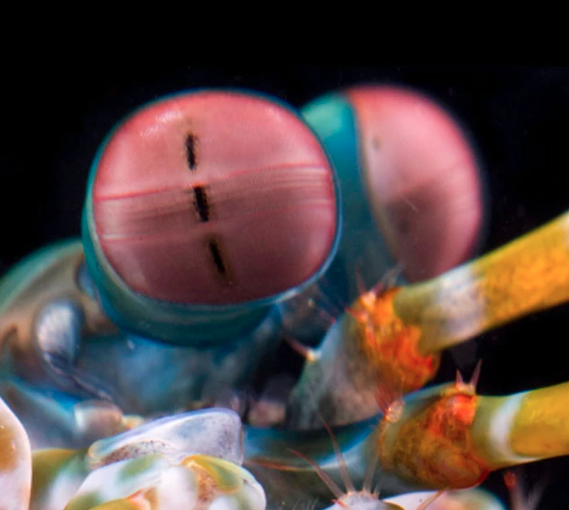
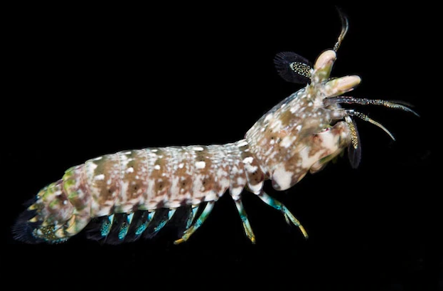

Fatos sobre o Stomatopoda
Informações Gerais
Stomatopoda, Odontodactylus scyllarus, chamados popularmente de tamarutacas ou de lacraias-do-mar no Brasil, é uma ordem de crustáceos marinhos da subclasse Hoplocarida, que agrupa cerca de 400 espécies, caracterizadas principalmente pela morfologia da segunda pata torácica, que é modificada em apêndice subquelado, lembrando uma pata de louva-a-deus.
- Reino: Animalia
- Filo: Arthropoda
- Subfilo: Crustacea
- Classe: Malacostraca
- Subclasse: Hoplocarida
- Ordem: Stomatopoda
Super Visão de Cores
A maioria das pessoas tem três tipos de células de detecção de luz, ou fotorreceptores, que são sensíveis à luz vermelha, verde e azul. Mas o Stomatopoda tem de 12 a 16 fotorreceptores diferentes na faixa intermediária de seu olho.
Soco Super Potente
Os Stomatopoda são parentes agressivos de caranguejos e lagostas e atacam outros animais, mutilando-os com "jabs" devastadores. Suas armas secretas são um par de braços articulados dobrados sob a cabeça, que podem ser desenrolados em velocidades incríveis. De até 80 Km/Hr
